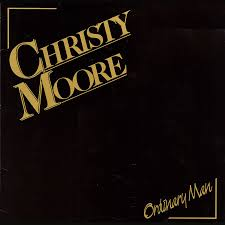

Sweet Music Roll On
Down by O’Connell street one summers evening I met a young woman, it was our first meeting Crossed over the bridge and down by the river By the strawberry beds I found that I knew her She called me her darling man We spend a few hours and we drank a few glasses We danced at the bar ignoring their glances Ev’ryone knew her name and they knew by my face With a beer in my hand and her arm round my waist Calling me her darling man The river runs deep, sweet music roll on So the times are long gone, sweet music roll on Then came the morning and my boat was leaving She smiled as she said to me: “No point in grieving” Ev’ryonce in a while when I hear music playing I remember her smile and I hear her voice saying: Calling me her darling man The river runs deep, sweet music roll on So the times are long gone, sweet music roll on
Delirium Tremens
I dreamt a dream the other night I couldn’t sleep a wink The rats were tryin’ to count the sheep and I was off the drink There were footsteps in the parlour and voices on the stairs I was climbin’ up the walls and movin’ round the chairs. I looked out from under the blanket up at the fireplace. The Pope and John F. Kennedy were starin’ in me face.[1] Suddenly it dawned at me I was getting the old D.T.s When the Child o’ Prague began to dance around the mantlepiece. CHORUS Goodbye to the Port and Brandy, to the Vodka and the Stag, To the Schmiddick and the Harpic, the bottled draught and keg. As I sat lookin’ up the Guinness ad I could never figure out How your man stayed up on the surfboard after 14 pints of stout. Well I swore upon the bible I’d never touch a drop. My heart was palpitatin’ I was sure ’twas going to stop, Thinkin’ I was dyin’ I gave my soul to God to keep. A tenner to St. Anthony to help me get some sleep. I fell into an awful nightmare – got a dreadful shock. When I dreamt there was no Duty-free at the airport down in Knock. George Seawright was sayin’ the rosary and SPUC were on the pill.[2] Frank Patterson was gargled and he singin’ Spancil Hill. CHORUS I dreamt that Mr. Haughey had recaptured Crossmaglen Then Garret got re-elected and gave it back again. Dick Spring and Roger Casement were on board the Marita-Ann As she sailed into Fenit they were singin’ Banna Strand. I dreamt Archbishop McNamara was on Spike Island for 3 nights Havin’ been arrested for supportin’ Traveller’s rights. I dreamt that Ruairi Quinn was smokin’ marijuana in the Dail Barry Desmond handin’ Frenchies out to scuts in Fianna Fail. CHORUS I dreamt of Nell McCafferty and Mary Kenny too The things that we got up to, but I’m not tellin’ you. I dreamt I was in a jacuzzi along with Alice Glenn ’twas then I knew I’d never ever, ever drink again. CHORUS In Christy’s live versions, the previous 2 verses are replaced with the following; I dreamt I was in ecstacy in Heaven, and in agony in Hell, I was bored in Limbo and then I was in Purgatory as well And there was original sins and venial sins and mortal sins by the score So I tied barbed wire around my underpants and flagellated myself on the floor Then I dreamt I was in the confessional box and the auld Bishop said to me; ‘Any impure thoughts, my child?’ Sure the f**king barbed wire was killin’ me! And then I dreamt I was in the jacuzzi with that auld hoor from No. 10 And then I knew I’d never ever, ever drink again.
more info
at the end of a top shelf stagger I rattled me knob off the corner of a gable end, thats it sez I -never again….but shur I was ony coddin mysel….put us on a nice basin there Shay and I’ll have a large Vera and super while its settlin ….whose upstairs tonight, Oh its myself is it,…Is there, by any chance, a spare box in the house, do ye want one set or two,whos doin the door, could you sub a few bob til after
Ordinary Man
I’m an ordinary man, nothing special nothing grand I’ve had to work for everything I own I never asked for a lot, I was happy with what I’d got Enough to keep my family and my home Now they say that times are hard and they’ve handed me my cards They say there’s not the work to go around And when the whistle blows, the gates will finally close Tonight they’re going to shut this factory down Then they’ll tear it d-o-w-n I never missed a day nor went on strike for higher pay For twenty years I served them best I could Now with a handshake and a cheque it seems so easy to forget Loyalty through the bad times and through good The owner says he’s sad to see that things have got so bad But the captains of industry won’t let him lose He still drives a car and smokes his cigar And still he takes his family on a cruise, he’ll never lose Well it seems to me such a cruel irony He’s richer now than ever he was before Now my cheque is spent and I can’t afford the rent There’s one law for the rich, one for the poor Every day I’ve tried to salvage some of my pride To find some work so’s I might pay my way Oh but everywhere I go, the answer’s always no There’s no work for anyone here today, no work today BREAK – 1st four lines And so condemned I stand, just an ordinary man Like thousands beside me in the queue I watch my darling wife trying to make the best of life And God knows what the kids are going to do Now that we are faced with this human waste A generation cast aside And as long as I live, I never will forgive You’ve stripped me of my dignity and pride, you’ve stripped me bare You’ve stripped me bare, you’ve stripped me bare.
Matty
Johnny Mulhearn
(A) matty went out on a frozen night makin for the pub shoulders hunched up tight head down on the railroad track and his old cow Delia sad lowin him back (A) he met with a dark and a troubled man as he passed him by called back at him hey matty cant you see whats become of me in this country of the blind (B) the house i’ve left is dead to me to my rhymin and my poetry all i’ve got is the beat of the stagger as i’m headin down the curra line (A) matty passed on as quick as he could he could’nt stand such a crooked man sober all he wanted was the lights of the bar the nightingale and the wild rover (A) the fear an tí eyed him steadily as he handed him a pint of porter sayin you must have seen the bishops ghost tonight to put the dry look back in your eye (A) matty would not be takin in by their jibin and regalin he found himself a fresh blown crew and fell in with their sportin and their balin (B) as he was goin home in the very same spot he met with his dark familiar he seen him comin back down the road he was bright and sharp and fine (A) as he passed him by matty threw out his arms and tried to grab hold of his likeness in the morning all we found was his frozen corpse at the butt of the curra line (B) at the wake they were lashin out the drops of brandy,the auld fashioned habit in the church they were lashin out pounds and fivers so matty would be fine in the old bye and bye
more info
I heard Johnny sing this song 25 years ago.The lyric I sing has changed a bit over the years. I have it on the “Ordinary man ” album of 1986.Johnny has also recorded the a version .This is one of my favourite songs. Johnny also wrote”Continental Ceili” “Delaneys gone back on the wine” and many other fine song.
Reel In The Flickering Light
Colm Gallagher
As I was walkin’ home one evenin’ I know this takes some believin’, I met a group of creatures with the strangest lookin’ features. A poor old dog with a worm and a weed and a fine old pigeon, yes indeed, Daddy Longlegs jumped up sprightly and danced a reel of the flickering light. CHORUS Oh, round we go, heel to the toe, Daddy Longlegs jumped up sprightly, And danced in the reel of the flickering light. On his thin and wispy spindles he was deft and he was nimble, His eyes were scientific and his dancin’ was terrific. The rats and the worms they made a din and the nettles in the corner took it in, ‘Oh God’ sez I ‘tonight’s the night we’ll dance to the reel in the flickering light!’ CHORUS Then he looked at me directly with a gaze that could dissect me, And he asked me in a whisper ‘Have you got any sisters?’. ‘ Good God Almighty’ sez I to him ‘ What sort of a man do you think I am? I’ve only one and she’s not your type, she wouldn’t dance a reel in the flickering light!’ CHORUS Sez he ‘ Does she come from another planet? Does she have a bee in her bonnet? Does she do her daily duties? You never know we might be suited’. And the rats and the worms began to laugh and some of them started shufflin’ off. We’re goin’ to have some fun tonight gettin’ ready for the reel in the flickering light. CHORUS I could see he had no scruples when I looked into his pupils, They were purple or magenta like a statue during Lent. I said ‘ I’ll get her right away’ ‘Good man’ sez he ‘now don’t delay, We’re goin’ to have some fun tonight’. Then he flipped his legs in the flickering light. CHORUS Then up stepped a red carnation and they gave her an ovation. She was warm and enchantin’ as she slowly started dancin’. And the bright auld pigeon peeld his eye and the nettles and the weeds began to sigh, Daddy Longlegs said ‘My, oh my, are we ready for the reel in the flickering light? CHORUS She was gentle, she was charmin’ and I heard him call her Darlin’. He was graceful as a whisper on his delicate legs of silver. And the rats and the worms were still as mice and the poor auld pigeon said ‘that’s nice’, A shimmering veil of a lovely bride and they danced to the reel in the flickering light. CHORUS X 2
The Diamantina Drover
Hugh McDonald
The faces in the photographs are fading I can’t believe he looks so much like me For its been ten long years today since I left for old Cork Station And I won’t be back till the drove is done. Chorus: For the rain never falls on the dusty Diamantina The drover finds it hard to change his mind For the years have surely gone like the drays from old Cork Station And I won’t be back till the drove is done. It seems like the sun comes up each morning Sets me up then takes it all away Dreaming by the light of the campfire at night Ends with the early light of the day. Chorus I sometimes think I’ll settle back in Sydney It’s been so long and it’s hard to change your mind For the cattle trail rolls on and on, the fences last forever And I won’t be back when the drove is done.
Blantyre Explosion
Moore/Lunny/McGlynn (Trad. Arr.)
By Clyde’s bonny banks as I slowly did wander Among the pit heaps as the evening grew nigh I spied a young woman all dressed in black mourning Weeping and wailing with many a sigh I stepped up beside her and gently addressed her Would it help you to talk about the cause of your pain? Weeping and wailing at last she did answer Johnny Murphy, kind sir, is my true lover’s name. Twenty one years of age, full of youth and good looking To work down the mine of High Blantyre he came Our wedding was fixed all the guests were invited That calm summers’ evening my Johnny was slain The explosion was heard by the women and children With pale anxious faces they ran to the mine When the news was made known all the hills rang with mourning Thee hundred and ten Scottish miners were slain. Mothers and daughters and sweethearts and lovers The Blantyre explosion you’ll never forget All you good people who hear my sad story Remember the miners who lie at their rest.
Hard Cases
Johnny Mulhearn
You’re in the pub at half past ten, the money for the cure all spent again, Trying to figure out who’s carrying and where they’ll be that day Forget about the night before when you were flying for an hour or more And move across to the Central Bar hoping that you’ll see Chorus: One of them hard cases, soft faces, who grip you with their deadly smile, The grip it slowly tightens and the grin gets slowly deeper And beads of perspiration stand out upon your cadgilation Someone takes the pressure off and calls out more porter Soon enough the tap runs dry and the afternoon goes slowly by The Barman looks on warily as your mates come drifting in Someone says there’s a session on, a tarnished bard has just hit town Move across to the Widows; see if you can rustle up the entrance fee from Chorus: A woman you know buys you your last and the evening goes flashing past Bridie’s screaming as your eyeing the slops behind the bar The party crowd is gathering, the banjo, fiddle and mandolin The cider flagon hunt is on, if you haven’t got a tosser Won’t you bring along a dozen of Chorus
more info
I listen to this song and I fly back to a time in The Cellar,Galway.Mickey Finn is holding court as we try to hang on to our barstools lest we fall off with the laughter.Corky is betwixt counter and corner, Galligan is in and out restless, JJ puts his head round the door but retreats back out into the day his face burnt from Eyre Square tanning.Terry Smith comes on his break,Lord Mexborough swans thru and then Divilly comes in and chases me out to the Van for the trip out to Cotters of Inverin,scian and poit�n
Continental Céilí
Author: Johnny Mulhearn / Christy Moore
Over in McCann’s there’s a grand type of danceband a-playing and they’re spinnin’ out the Continental Ceili, They’re comin’ in their cars from the bars over in Leitir and Killane just to hear the famous Gunther Reynolds playing. Out the Star of Munster with Hans O’Donoghue neatly tappin’ out a tango on the spoons. Such commotion will act like a lotion on the struttin’ At the Continental Céilí tonight. Wolfgang’s playing on the comb, someone shouts at him go home. Klaus is playin’ a slow air on the bodhrán. Quinn from Corofin his fiddle tucked beneath his chin Ssh! He’s going to play the Bucks of Oranmore now. And an old-fashioned lady begins to sing a song. Ah! Lads a bit of order over there. Clarinbridge for the chowder, keep your powder dry, For the Continental Céilí tonight. Ciarán closing his eyes pretends he’s in disguise, when he sees and old flame comin’ over He’s singing for the Swedes in their tweeds doin’ all he can to please – the night’s at such a delicate stage, Later on he’ll give an audience to one of them or two, He’ll sing the the Dyin’ Swan to touch their feelings, Tonight’s his night and tomorrow night will be just the same. Ada let me out to the bar where the boys are goin’ far and they’re spinnin’ out the Continental Ceili. Never mind the liquor, the music’s in my soul So long as I can hear the band a-playin’ The pipes and the flutes and the fiddles are in tune. Whoo! I’d love to meet a European girl Ada now me head is goin’ light and the band is playin’ tight At the Continental Céilí tonight. All the publicans are there, ’tis like a hirin’ fair Tryin’ to figure out how much McCann is makin’. To keep their pubs outta Stubbs they’re lashin’ out big subs In a burst of fierce anticipation. Moguls from Muckhill are starin’ at the till Tryin’ to get the lowdown on the line-up They’ll be buyin’ free porter for the members of the band At the Continental Céilí tonight.
More Info
Johnny captures a special time in our lives,we were discovering the music and lyrics again, out of Rock ‘n Roll and into the Rocks of Bawn,we were flyin it, Sean Ó Conaire would walk to Dublin to sing in Slatterys,we were hitching to Boyle to hear John Reilly.There were Loungefuls of music springin up allover, The Merriman in Scariff, Carpenters of Carlow, Greens in Dungarvan,Melodys up The Nire,McGlynns in Sligo, The Cellar síos i nGaillimm,Minogues in Tulla and thats only the start of the last.The Trad was back up and runnin-mixed in with new sounds and different attitudes,less Dev and more Ronnie Drew,there was revolution in the air, Nell was burnin her bra and Ms Kenny her bridges,…..(contd page 95)
St. Brendan’s Voyage
Christy Moore
A boat sailed out of Brandon in the year of 501 ’twas a damp and dirty mornin’ Brendan’s voyage it began. Tired of thinnin’ turnips and cuttin’ curley kale When he got back from the creamery he hoisted up the sail. He ploughed a lonely furrow to the north, south, east and west Of all the navigators, St. Brendan was the best. When he ran out of candles he was forced to make a stop, He tied up in Long Island and put America on the map. Did you know that Honolulu was found by a Kerryman, Who went on to find Australia then China and Japan. When he was touchin’ 70, he began to miss the crack, Turnin’ to his albatross he sez “I’m headin’ back”. To make it fast he bent the mast and built up mighty steam. Around Terra del Fuego and up the warm Gulf Stream, He crossed the last horizon, Mt. Brandon came in sight And when he cleared the customs into Dingle for the night. When he got the Cordon Bleu he went to douse the drought, He headed west to Kruger’s [3] to murder pints of stout Around by Ballyferriter and up the Conor Pass He freewheeled into Brandon, the saint was home at last. The entire population came (281) the place was chock-a-block Love nor money wouldn’t get your nose inside the shop. The fishermen hauled up their nets, the farmers left their hay, Kerry people know that saints don’t turn up every day. Everythin’ was goin’ great ’til Brendan did announce His reason for returnin’ was to try and set up house. The girls were flabbergasted at St. Bredan’s neck To seek a wife so late in life and him a total wreck. Worn down by rejection that pierced his humble pride, “Begod”, sez Brendan “If I run I’ll surely catch the tide” Turnin’ on his sandals he made straight for the docks And haulin’ up his anchor he cast off from the rocks. As he sailed past Inishvickallaun there stood the albatross “I knew you’d never stick it out, ’tis great to see you boss” “I’m bailin’ out” sez Brendan, “I badly need a break A fortnight is about as much as any aul saint could take.” CHORUS “Is it right or left for Gibraltar” “What tack do I take for Mizen Head?” “I’d love to settle down near Ventry Harbour”, St. Brendan to his albatross he said.
Another Song Is Born
Christy Moore
I looked over my shoulder but not for too long, It’s no place to look if you’re writing a song, Some songs grow ancient and live through the years, While others die off and dry up like tears. You open the cloak and lift up a veil, The hammer is raised to drive home a nail, The flesh is torn open, the bone is revealed, Wounds that fester seldom get healed. Chorus: Songs written for love and written for gain, Some make you laugh, soothe a bad pain, Songs have a heart, a body, a soul, You lay one to rest and another song is born. While we rescue banks and Royal Kilmanham Halls, Hell on this earth means nothing at all, My hands are all withered and I cannot breathe, The nightmare of indifference to suffering and need. Chorus The elite on the plinth maintain status quo, Marble and granite their movements are slow, The silk stays unruffled as the eyebrows are raised, Satin and mohair the good lord be praised. Chorus….
Quiet Desperation
Floyd Red Crow Westerman
My soul is in the mountain My heart is in the land I’m lost here in the city There’s so much I don’t understand. There’s quiet desperation coming over me, Coming over me. I’ve got to leave I can’t stay another day There’s an emptiness inside of me, I can’t bear the loneliness out here There’s another place I’ve got to be. I long for you, Dakota The smell of sweet grass on the plain I see too much meanness And I feel too much pain. And there’s quiet desperation coming over me, Coming over me. I’ve got to leave I can’t stay another day There’s an emptiness inside of me I can’t bear the loneliness out here There’s another place I’ve got to be.